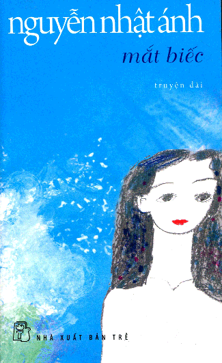
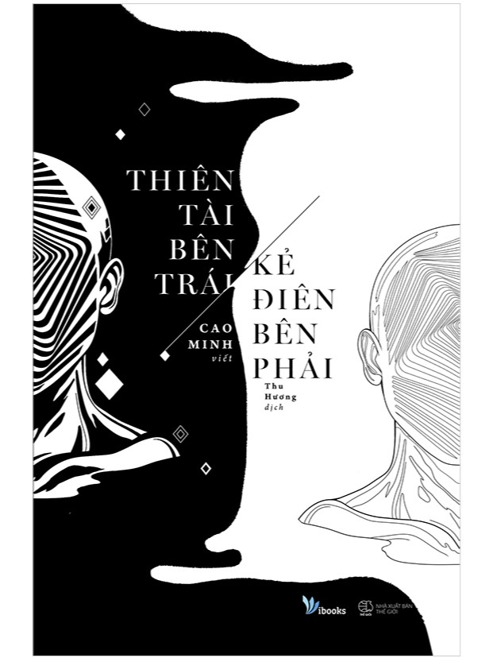
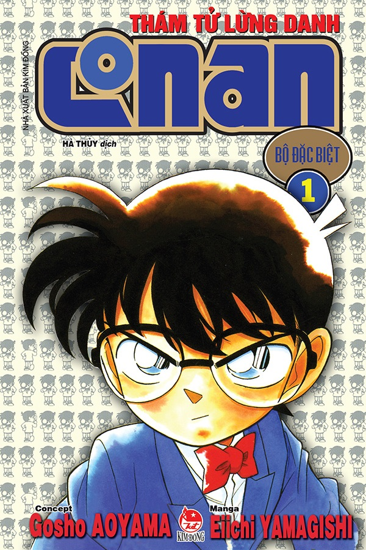

Tôi thấy hoa vàng trên cỏ xanh
Khu Vườn Ngôn Từ

Thể loại: Truyện ngắn, Truyện tình cảm
Tác giả: Nguyễn Nhật Ánh
Số trang: 234
Ngày phát hành: 1990
Nhà xuất bản: NXB trẻ
Mắt Biếc

Thể loại: Tiểu thuyết
Tác giả: Cao Minh
Dịch giả: Thu Hương
Số trang: 424
Nhà xuất bản: Thế Giới
Thiên tài bên trái, kẻ điên bên phải

Doraemon

Thể loại: Bí ẩn, Trinh thám
Tác giả: Aoyama Gōshō
Số tập: 104
Ngày phát hành: 19 tháng 1, 1994 - nay
Nhà xuất bản: Shogakukan